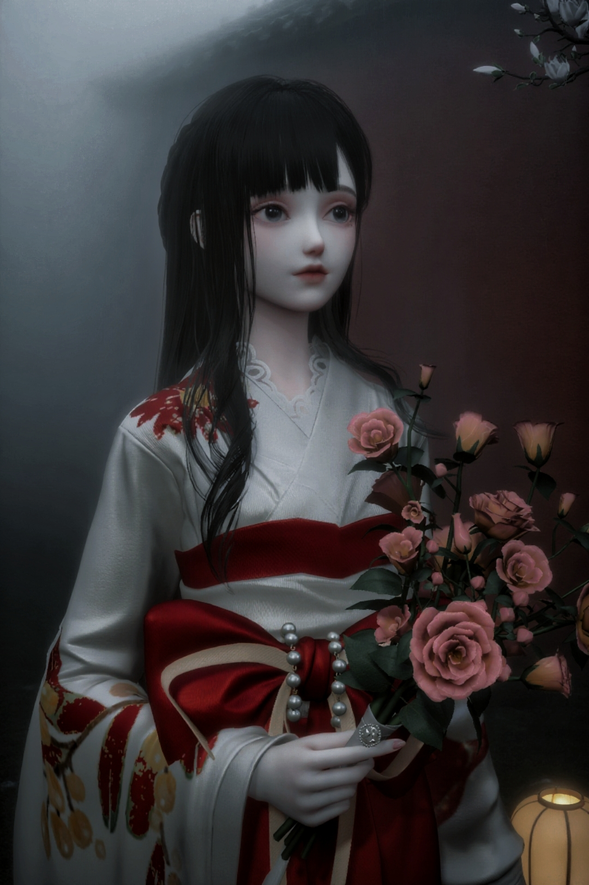
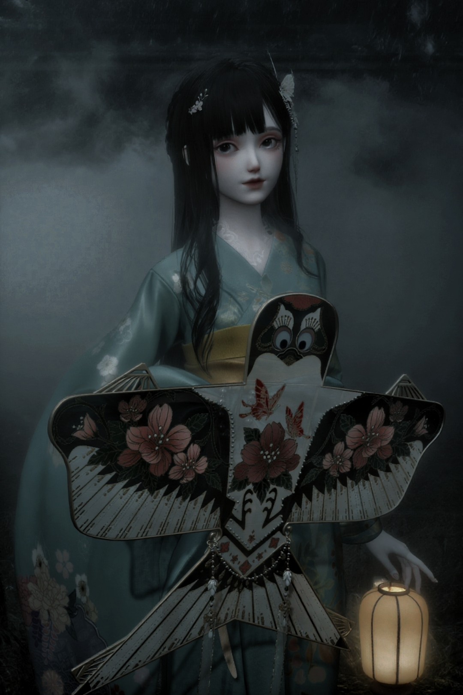
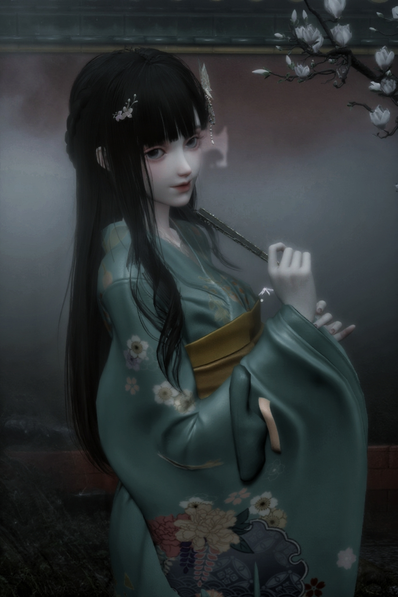
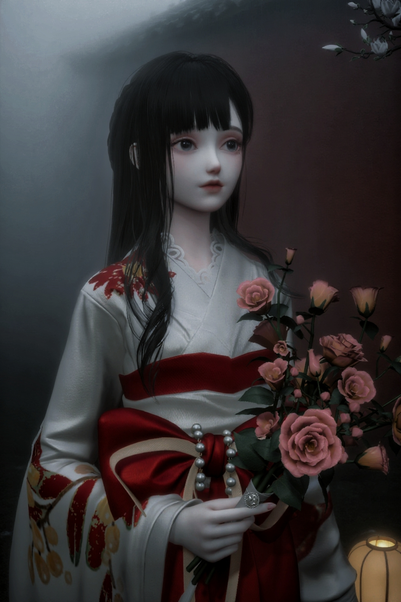
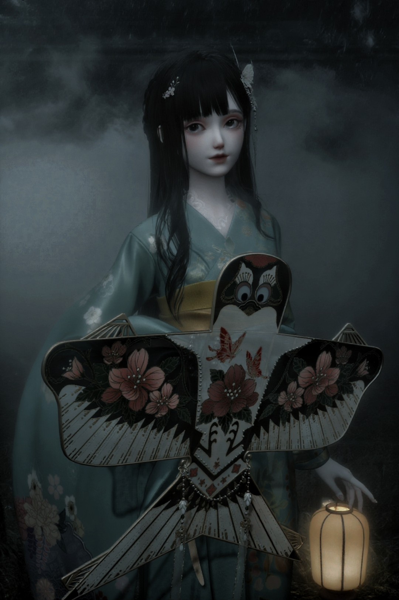
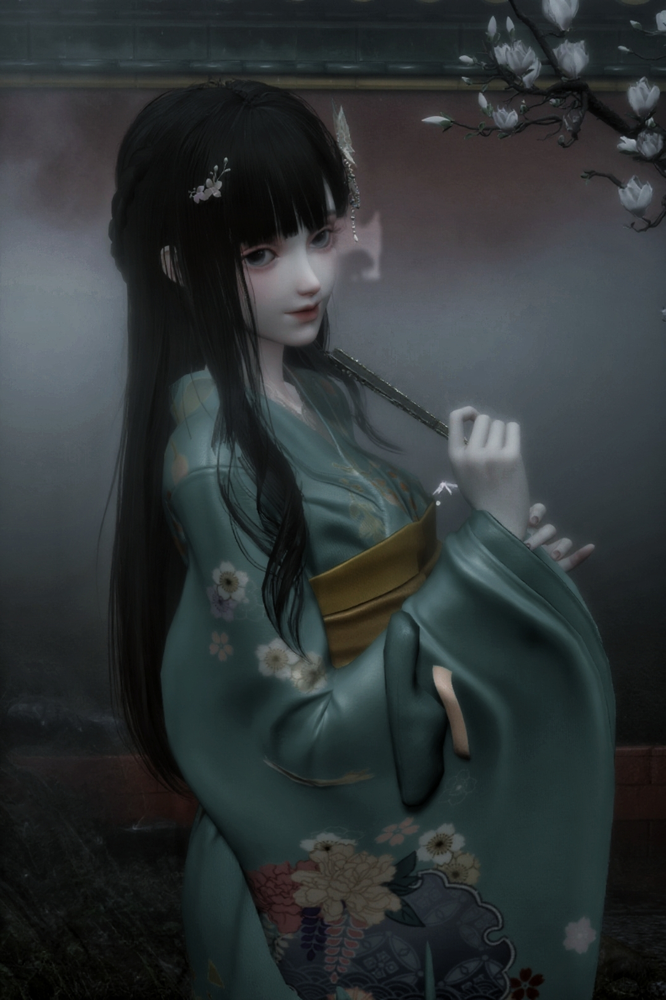

七、文化内涵与社会责任 & 八、适合人群与玩家评价
七、文化内涵与社会责任
《以闪亮之名》不仅是一款游戏，更承担文化传播和社会责任：
 





- 非遗文化传播：一年内进行六个非遗联动，推出非遗主题服装与活动，荣获“年度焕新非遗传播贡献品牌”，是获奖三款游戏中唯一国产女性向游戏；
- 传统风格融合：通过和风服饰、传统纹样（如图中风筝、和服花纹）的设计，让玩家在游戏中感受传统文化的美学魅力；
- 社会公益活动：发起「闪亮计划」女童关爱行动，与公益机构合作资助偏远地区女孩；甘肃地震时，联合筹备30万份女性用品捐赠，体现企业担当。
八、适合人群与玩家评价
适合以下类型玩家：
- 换装游戏爱好者：高品质服装收集和搭配体验；
- 创意设计玩家：喜欢自定义内容、服装设计和家园建造；
- 社交型玩家：偏好与朋友互动的社交功能。
玩家评价总结：
主要优点
- 顶级的画面表现与细节处理；
- 极高的自由度（捏脸、服装、家园）；
- 丰富的玩法与社交互动；
- 非遗联动与公益活动传递正能量。
主要缺点
- 主线剧情表现一般，部分玩家反馈“代入感弱”；
- 福利较为抠门，稀有服装获取难度较高；
- 后期玩法存在“肝度较高”的情况。
总结：以技术力和自由度的双重优势，为女性向游戏设立新标杆，是承载审美表达与创造力的虚拟平台。